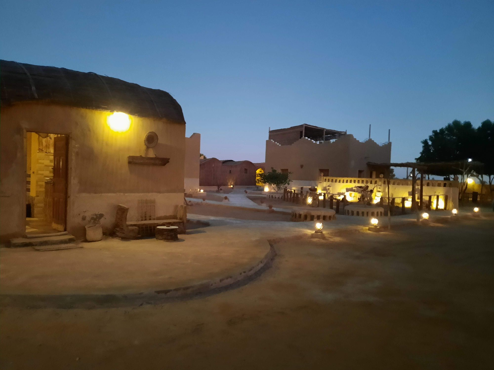

How itwas built.
A tribute to the people who built Sand Gate Camp — by hand, in earth, from 2009, in the small oasis of Abu Monkar.
A moderncaravanserai.
Construction began in 2009 in Abu Monkar, a small oasis in Egypt’s Western Desert. The idea was a modern caravanserai: a resting place for travellers between Farafra and Dakhla, and a gateway to the Great Sand Sea.
The builders followed the earth-construction methods of the Egyptian architect Hassan Fathy, adapted to the local climate and terrain — thick walls, vaults and domes that keep the interior cool without machines.
Watchthe film.
 Play the making-of
Play the making-of
Earth, palmand patience.
What makes the camp work in the desert.
Hassan Fathy’s method
Earth architecture designed for the people and climate of Egypt.
Built for the heat
Thick walls and shaded courtyards that hold the cool of the night.
Local hands
Raised by the people of the oasis, with local materials.
Come andsee it standing.
Tell us your dates and how you like to travel. We reply personally, usually within a day, with a route and a quote.